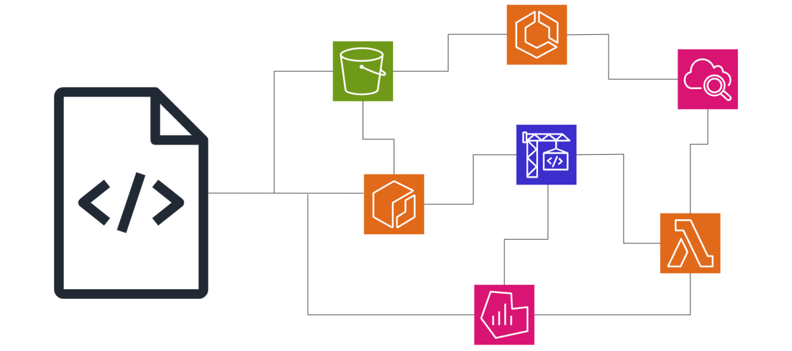

IaC란, Infrastructure as Code의 약자로, 인프라를 코드로 관리하는 것을 말합니다.
접근 방식에 따라 선언형과 명령형이 존재하는데, 명령형 언어의 경우 현재 상황을 반영하지 않는다는 단점이 존재하기 때문에 선언형을 조금 더 많이 사용합니다.
| AWS CloudFormation | AWS CDK | Terraform | |
|---|---|---|---|
| 클라우드 환경 | AWS 전용 | AWS 전용 | 멀티 클라우드 |
| 코드 방식 | 선언형 (YAML/JSON) | 명령형 (TypeScript/Python) | 선언형 (HCL) |
| 상태 관리 | AWS에서 관리 | AWS에서 관리 | tfstate 파일로 관리 |
| 변경 계획 | Change Set | 없음 | terraform plan |
| 보안 정책 | CloudFormation Guard | AWS IAM | Sentinel 지원 |
도구를 선정하는 기준은 각 조직에 운영 방식에 따라 달라지겠지만, 멀티 클라우드의 비중이 많아지는 현재 상황에서는 Terraform과 같이 여러 CSP를 지원해주는 IaC 도구를 많이 사용합니다. 아래는 추가적인 Terraform 설명입니다.